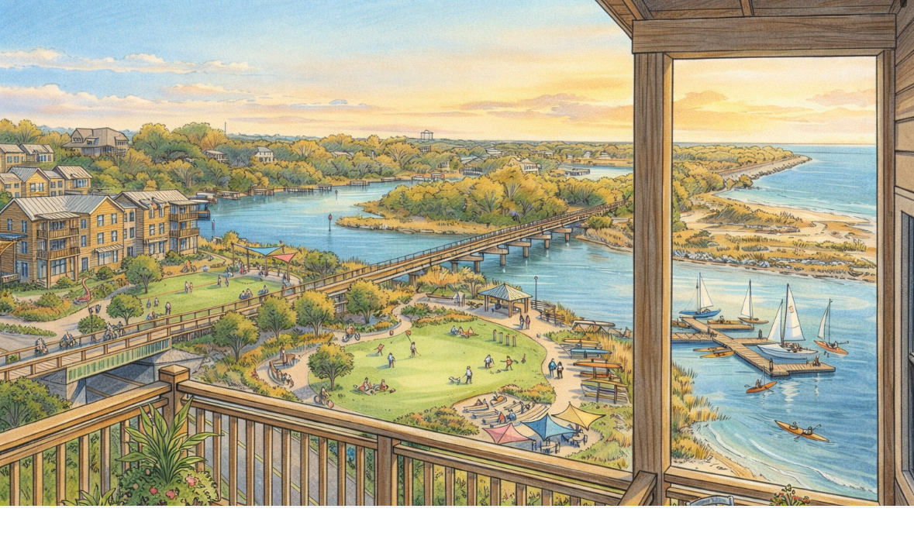

Advisory for the Beulah Road decision
A scoped engagement to shape the corridor, structure, and timing before others decide them.
One process, five turns
Every engagement runs the Virtuous Cycle Process — beginning in the place, reconciling interests, and returning value to its source. For Beulah Road, the work concentrates in the first three phases this year, with the last two carried into delivery.
We build with, not for. The Diocese stays the principal at every turn; our role is to make its hand visible at the tables where value is decided.
What we will do, and for what
| Component | Range |
|---|---|
| Monthly advisory retainerCoordination, drafting, briefings | $1.5–3.0k / mo |
| Corridor & structure work productPhases II–III, fixed on scope | $12–24k |
| Delivery supportPhase IV, as engaged | Hourly / scoped |
| Indicative first-year range | $30–60k |
Ranges, not point estimates — fees fix to scope once Phase I defines it. Civil engineering and third-party costs are billed at cost. No reimbursables without prior approval.
This proposal is offered under an Independent Contractor Advisory Agreement; work is advisory and does not constitute an appraisal, legal opinion, or brokerage. Either party may conclude the engagement with 30 days' notice; fees are earned through the date of notice.
Retainer is invoiced monthly, due on receipt. Work product is the Diocese's upon payment. All materials are confidential to the engagement. This proposal is valid for 60 days from the date above.